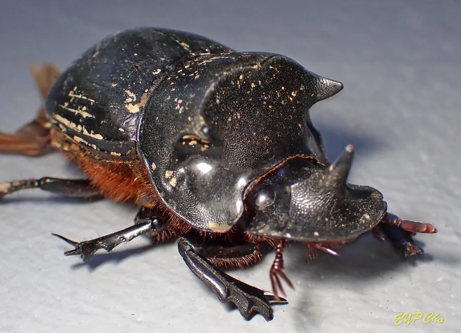

昆虫 · 动物界
神农洁蜣螂 Catharsius molossus

中国常见的大型蜣螂，体黑而厚重，雌雄合作把粪便滚成球埋入地下，并在粪球中产卵，是草原和农田的“清道夫”。
- 分类
- 门节肢动物门纲昆虫纲目鞘翅目科金龟科属蜣螂属
- 栖息环境
- 草原、牧场和农田，以动物粪便为食
- 地理分布
- 中国南方和东南亚，常见于牧场和农田
- 保护级别
- 暂无评估
物种志
神农洁蜣螂成虫体长 20–30 mm，体型粗壮，体色黑褐至黑色，头部宽扁，前足粗壮、边缘有齿，适合挖掘和推动粪便。它的身体像一台小型推土机，力量很大。
神农洁蜣螂分布于中国南方和东南亚，栖息于草原、牧场和农田。它以动物粪便为食，雌雄合作把粪便滚成球，埋入地下储存，并在粪球中产卵，粪球为幼虫提供食物和庇护。在牧场中，蜣螂数量多时，粪便往往在几天内就被埋入土中。蜣螂能加速粪便分解、改良土壤、减少粪便滋生的害虫，是重要的生态工程师。在古埃及文化中，蜣螂被视为太阳神的象征，被称为“圣甲虫”。目前它没有IUCN 的正式评估，中国未将其列入国家重点保护野生动物名录。
形态与习性
- 食性以动物粪便为食，幼虫取食粪球
- 体长20–30 mm
- 繁殖雌雄合作把粪便滚成球埋入地下，在粪球中产卵
- 生态作用加速粪便分解、改良土壤、减少害虫滋生
- 分布中国南方和东南亚的草原、牧场和农田
- 习性前足粗壮有齿，擅长挖掘和推粪
趣味知识
- 神农洁蜣螂把粪便滚成球埋进土里，幼虫就在粪球中长大。
- 它能加速粪便分解，被称为“自然界的清洁工”。
- 古埃及人把蜣螂视为太阳神的象征，称它为“圣甲虫”。